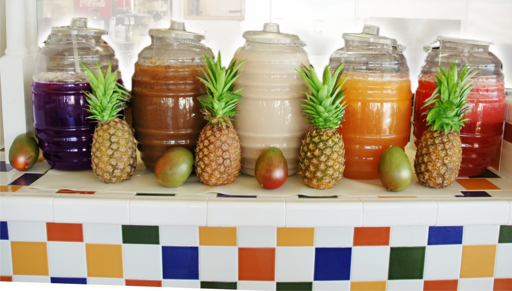
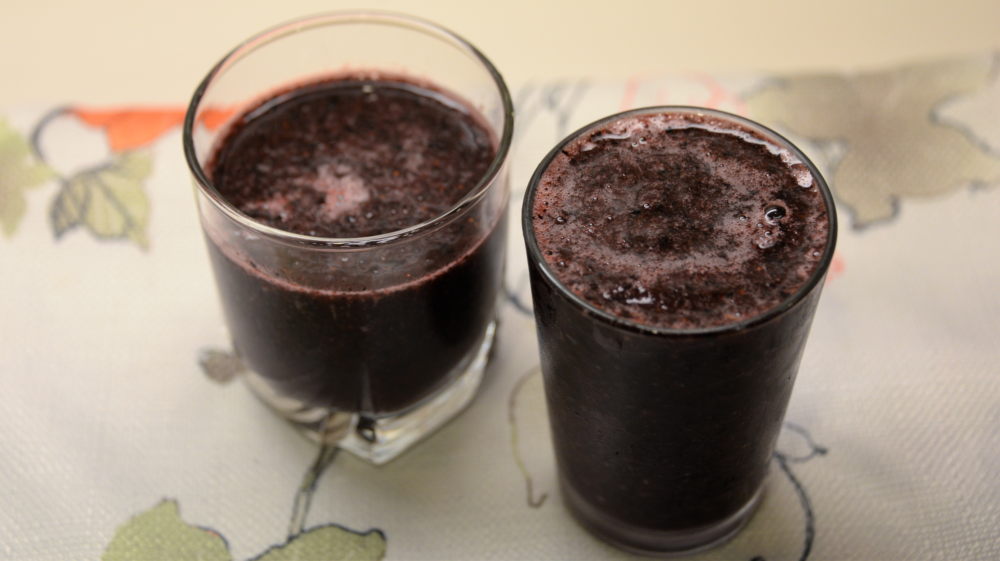
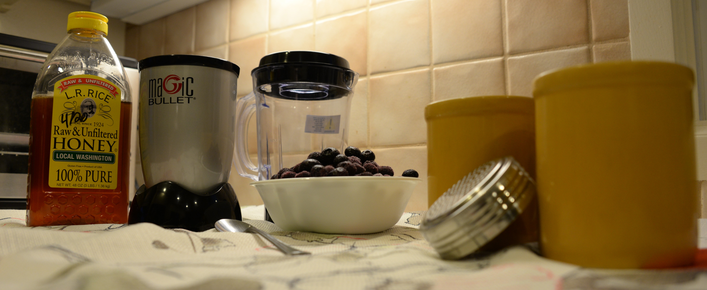
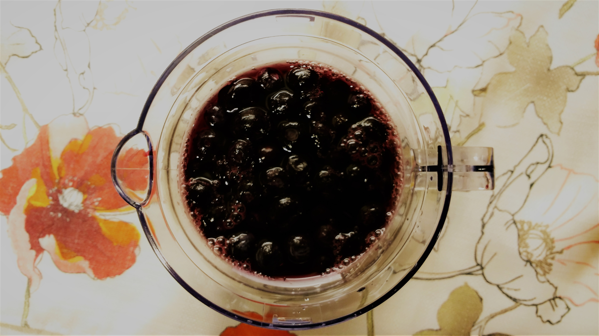
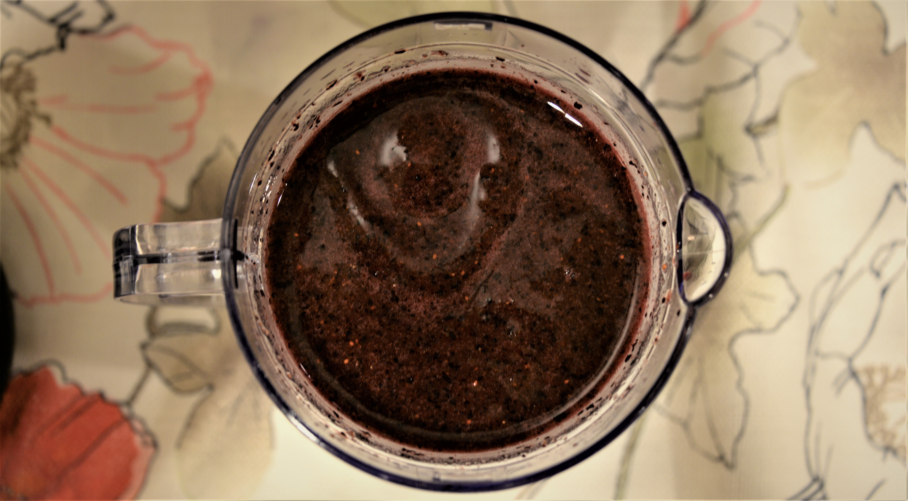
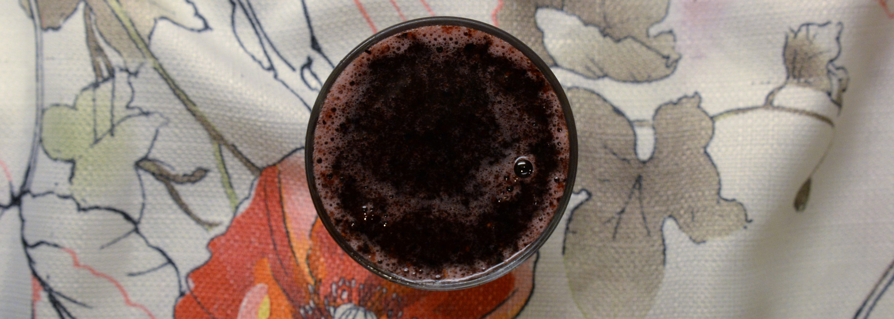
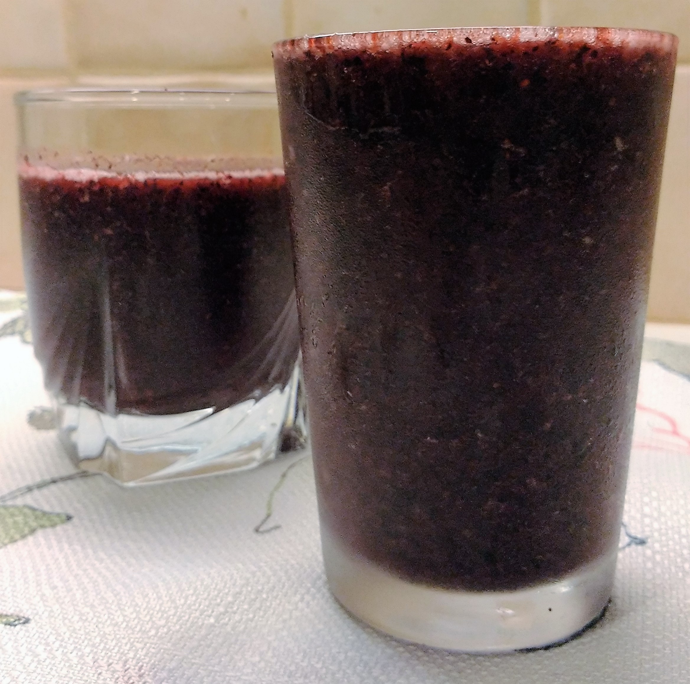

Agua Fresca
de Neal
Agua fresca es muy común en Mexíco y es muy bién con algo frutas. Piñas, fresas, y guayabas son frutas muy populares por agua fresca. No necesitas muchas ingredientes porque agua fresca es muy facíl.
Los Ingredientes
- 4 tazas de agua
- 2 tazas de frutas varios
- Un cuarto de un taza de azúcar
- 2 cucharadita de jugo de lima
- Rebanada de limas
- Hielo

Algunas notas:
- No usé hielo porque usé arándano congelado.
- Miel y azúcar son intercambiable.
- Puedes aderezar y usar lima si tu quieres.
Direcciones
1. Añade el agua y las frutas a la batidora.
2. Mezcla hasta que el jugo es ligado.
3. Añade más azucar(o miel) y jugo de lima por gusto.

4. Sirvelo con hielo y rebanadas de limas si quieres.
5. ¡Disfruta!

